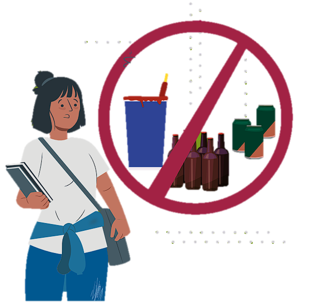
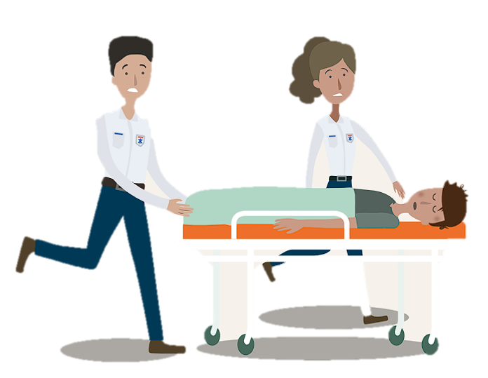

PROPÓSITO
Dar a conocer las características de las bebidas alcohólicas, los daños más importantes a la salud y
los impactos negativos alrededor de su consumo.
¿QUE ES?
El alcohol es una droga que tiene la capacidad de producir sedación. Los efectos de su consumo
inician de forma leve, con desinhibición y euforia. El aumento en la cantidad ingerida provoca
mareo, descoordinación, vómito, desequilibro, dificultad para hablar y confusión. Una ingesta desmedida puede inducir depresión
grave del sistema nervioso e, incluso, la muerte. Además, beber alcohol causa adicción.
El consumo de bebidas alcohólicas en la adolescencia puede afectar el desarrollo del cerebro,
la capacidad de construir relaciones saludables y altera el estilo de vida. Asimismo, este consumo
puede disminuir el rendimiento escolar y, por la desinhibición que
causa, puede acercar a las y los adolescentes a comportamientos sexuales de riesgo.
Por otra parte, la exposición a la publicidad de bebidas alcohólicas reduce la edad de inicio en
su consumo y aumenta la probabilidad de tomarlas de forma regular. Ingerir bebidas alcohólicas
antes de los 15 años incrementa los riesgos a la salud y la probabilidad de desarrollar dependencia
del alcohol u otras drogas en los siguientes años.
Existen diversos aspectos en el consumo de alcohol que incrementan su impacto negativo en la salud, por ejemplo: el tiempo
consumiendo, el patrón de consumo (días de consumo al mes y el número de copas por ocasión),
beber hasta la embriaguez, la calidad de las bebidas ingeridas, así como su pureza (si el alcohol es
adulterado con sustancias nocivas, como el metanol, se vuelve mucho más peligroso).

Cómo se consume y en qué formas
El alcohol es la droga legal más consumida en el mundo. Se estima que existen 2,400 millones de
personas que lo consumen. Las bebidas alcohólicas se ingieren por vía oral y se producen de dos maneras:
• Por fermentación: contienen entre 3 y 15 grados de alcohol. Algunos ejemplos son el vino, la cerveza y el pulque.
• Por destilación: se trata de líquidos conocidos como aguardientes o licores, los cuales contienen porcentajes de alcohol que
varían entre los 20 y los 80 grados. Los más conocidos son ron, tequila, mezcal, vodka, whisky y brandy.
Efectos durante su consumo
Los efectos dependen de la cantidad de alcohol que una persona haya ingerido, a continuación se presenta un breve resumen:
• En bajas cantidades: socialización, desinhibición, disminución de la atención.
• En cantidad media: inestabilidad emocional, se alarga el tiempo de reacción, mareo, desorientación, estado de confusión
• En altas cantidades: somnolencia, vómito, pérdida del control de esfínteres, descoordinación,
adormecimiento del cuerpo.
• Intoxicación grave: estado de inconsciencia, hipotermia, falta de reflejos, coma, posible muerte por paro respiratorio.
Consecuencias irreversibles para la salud
El alcohol es un factor de riesgo asociado a más de 200 trastornos
de salud física y mental, como enfermedades cardiovasculares, problemas del hígado, algunos tipos
de cáncer y accidentes con desenlaces fatales (de tránsito o riñas).
Por su parte, el inicio en el consumo de alcohol durante la adolescencia puede estar asociado a trastornos de salud mental, como
depresión y ansiedad. De igual forma, el consumo de bebidas alcohólicas por personas jóvenes está
vinculado con intentos de suicidio y muerte por esta causa.
El consumo de bebidas alcohólicas puede causar dolores de cabeza y migrañas durante y después
de su consumo. Durante la resaca se manifiesta esta consecuencia no deseada. Asimismo, trastornos
del sueño pueden aparecer desde la primera vez que se toma y durante el consumo frecuente.
Otras consecuencias son las alteraciones en la atención y concentración para realizar las actividades diarias, laborales o escolares.
Así como la dificultad para controlar impulsos, alteraciones del juicio
o dificultad en la toma de decisiones, y déficit en el aprendizaje.
¡NO TE ARRIESGUES CON LAS DROGAS!
Ten presente que:
· El consumo de bebidas alcohólicas antes de los 15 años aumenta los riesgos en la salud y la probabilidad de desarrollar
una dependencia del alcohol y otras drogas.
· Beber alcohol de forma excesiva afecta la atención y la concentración en actividades diarias, incluidas las laborales y las
escolares; además reduce la capacidad de aprendizaje.
· Una intoxicación grave por alcohol puede causar inconsciencia, hipotermia, falta de reflejos, coma y posible muerte
por paro respiratorio.

Consecuencias legales
El Gobierno de México ha buscado prevenir la venta de alcohol a menores de edad. Actualmente, quien venda bebidas alcohólicas a
menores enfrenta el riesgo de pasar de tres a seis años en prisión, y multas de hasta 350,000 pesos.